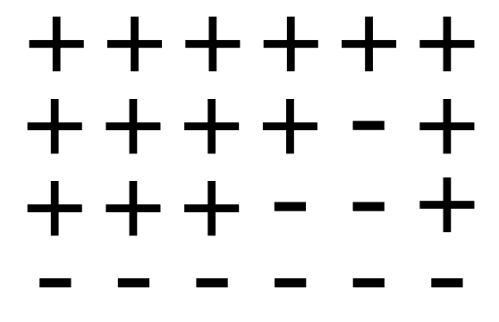
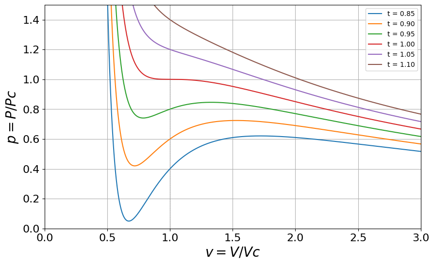

Here we present outline solutions to the problems.
1. Existence of a phase transition in \(d=2\).
Consider the simplest elementary excitation that will destroy long range order in the 2d system: a domain wall of \(N\) segments which divides an Ising system of \(L\times L\) spins into a spin up and a spin down part.

Figure 1: An \(N\)-step domain wall in an Ising lattice.
The associated energy cost is \(2JN \equiv \Delta E\).
To evaluate the entropy gain due to a domain wall in the system we have to estimate \(\Omega\) the number of possible paths for the domain wall. If we start at the left hand side then there are \(L\) starting positions. At each step the domain wall can move to the right, move up or move down. This implies that the number of domain walls is approximately
\[
\Omega\approx L3^N
\] Hence the entropy gain is:
For small enough \(T <2J/(k_B\ln 3)\), the free energy change is positive. Thus the ordered phase is free energetically stable against formation of a wall. Accordingly there will be a non zero value for \(T_c\) in two dimensions.
2. Correlation Length
Denote by \(m\) the number of domain walls between sites \(i\) and \(j\). Then \(s_is_j=1\) for \(m\) even, and \(s_is_j=-1\) for \(m\) odd.
Hence
\[
\langle s_i s_j\rangle =\sum_m p_m(-1)^m
\] with \(p_m\) the probability of finding \(m\) domain walls between them.
Now \(p_m\) is given by the binomial distribution, with the probability of a single domain wall at each bond given by
\[
p=\frac{e^{-2J/k_BT}}{1+e^{-2J/k_BT}}
\] and the probability of no wall is \(1-p\). Now, in the regime where \(T\) is small, \(p\) is very small, and there will be few domain walls between sites \(i\) and \(j\). If additionally, \(R_{ij}=|i-j|a\) is large, it tranpires that the binomial distribution assumes the limiting form of a Poissonian distribution (revise this if necessary). Thus
\[
p_m=\frac{\bar{m}^me^{-\bar {m}}}{m!}
\]
where \(\bar{m}=p|j-i|=pR_{ij}/a\) . Then
\[\begin{eqnarray*}
\langle s_i s_j\rangle &=& e^{-\bar {m}}\sum_m\frac{(-1)^m\bar{m}^m} {m!}\approx e^{-2\bar{m}}\\
&=& e^{-2pR_{ij}/a}\\
&=& e^{-R_{ij}/\xi}
\end{eqnarray*}\] with \(\xi=a/2p\), the correlation length.
3. A model fluid
The van der Waals (vdW) equation of state (See Sec 4.4.1 of the book by Yeomans) is essentially a mean field theory for fluids. It relates the pressure and the volume of a fluid to the temperature:
\[
\left(P+\frac{a}{V^2}\right)(V-b)=Nk_BT
\] where \(a\) and \(b\) are constants chosen to describe a specific substance and \(N\) is Avogadro’s number. Hence
This expression for the equation of state in terms of reduced variables is useful because reference to the system specific parameters \(a\) and \(b\) has vanished. In this form the equation is therefore universal.
Plotting \(P/P_c\) vs \(V/V_c\) for isotherms (values of \(t\)) and focussing on the region close to the critical point, one finds

Figure 2: Isotherms of \(p\) versus \(v\) for various \(t\) spanning the critical temperatures
Figure 3: (a) \(\frac{\partial p}{\partial v}\) for \(T=T_c\). (b) \(\frac{\partial^2 p}{\partial v^2}\) for \(T=T_c\).
Plotting \((\frac{\partial p}{\partial v})_{t=1}\) and \((\frac{\partial^2 p}{\partial
v^2})_{t=1}\), we see that there is indeed a point of inflexion on the critical isotherm, at \(v=1\), this is the critical point (ie. a continuous phase transition), Figure 3 .
Subcritical isotherms (first order phase transition) exhibit a so called van-der Waals loop.
To find the compressibility critical exponent \(\gamma\), we recall that
\[
\frac{\partial p}{\partial v}=\frac{-8t}{3(v-1/3)^2}+\frac{6}{v^3}
\] setting \(t=\tilde{t}+1\) and \(v=1\) gives \(\frac{\partial p}{\partial v} =-6\tilde{t}\), ie the compressibility diverges
\[
\kappa_T\propto \tilde{t}^{-1}
\] ie. \(\gamma=1\), which is the same as the mean field result which we derived in another context of the magnetic susceptibility.
4. Mean field theory of the Ising model heat capacity
We insert into the expression for the mean Ising energy
\[
\langle E \rangle =-J\sum_{<i,j>}\langle s_is_j\rangle\:,
\] the simplest mean field approximation \(\langle s_is_j\rangle=\langle s_i\rangle\langle s_j\rangle=m^2\). Recalling the behaviour of the order parameter for small \(t\), that the number of bonds \(=qN/2\), and the mean field value of \(T_c=qJ/k_B\), we have for \(T<T_c\)
\[\begin{eqnarray*}
\langle E \rangle &=& \frac{-NqJm^2}{2}
\: &=& \frac{3NqJt}{2}
\: &=& \frac{3Nk_B(T-T_c)}{2}
\end{eqnarray*}\] while \(\langle E \rangle= {\rm constant}\) for \(T>T_c\).
This independence of the heat capacity on \(t\) corresponds to a critical exponent \(\alpha=0\)
5. Magnetisation and fluctuations
The free energy is
\[
F=-k_BT\ln Z
\] with the partition function
\[
Z=\sum_{{s}}\exp[-({\cal H}-hM)/k_BT]
\]
Thus \[\begin{eqnarray*}
-\left(\frac{\partial F}{\partial h}\right)_T &=& k_BT\frac{1}{Z}\left(\frac{\partial Z}{\partial h}\right)_T\\
\: &=&\frac{1}{Z}\sum_{{s}}M \exp[-({\cal H}-hM)/k_BT]\\
&=& \langle M\rangle
\end{eqnarray*}\] where we have used the definition of the average of an observable given in lectures.
You should recognise the terms in square brackets as the variance of the magnetisation distribution.
Thus the susceptibility is \[
\chi_H\equiv\frac{\partial \langle M\rangle}{\partial h}=\frac{1}{k_BT}\left[\langle M^2\rangle-\langle M\rangle^2\right]
\]
Incidently, this is known as the fluctuation-dissipation theorem. It is a neat result, because it allows you to calculate the response to a perturbation from equilibrium, without actually perturbing the system! Instead one merely looks at the form of the equilibrium fluctuations. It is used extensively in computer simulations.
6. Spin-1 Ising model
As in lectures, the mean field Hamiltonian for a single spin is
\[
{\cal H}(s_0)=-s_0\left(qJm + H\right)
\] The probability of finding this spin with value \(s_0\) is \[\begin{eqnarray*}
p(s_0) &=& \frac{e^{-\beta{\cal H}(s_0)}} {\sum_{s_0=0,\pm 1}e^{-\beta{\cal H}(s_0)}}\\
&=&\frac{e^{\beta s_0(qJm+H)}}{1+e^{\beta(qJm+H)}+e^{-\beta(qJm+H)}}
\end{eqnarray*}\]
Now for consistency \(\langle s_0\rangle=m\), so \[\begin{eqnarray*}
m &=& \sum_{s_0=0,\pm 1}s_0p(s_0)\\
\:&=& \frac{0+e^{\beta(qJm+H)}-e^{\beta(qJm+H)}} {e^0+e^{\beta(qJm+H)}+e^{-\beta(qJm+H)}}\\
\:&=& \frac{2\sinh[\beta(Jqm+h)]}{1+2\cosh[\beta(Jqm+h)]}
\end{eqnarray*}\] To get the critical temperature, we can solve this graphically. One plots the RHS as a function of \(m\), for various \(\beta\). On the same graph one plots the curve \(y=m\) (representing the LHS). \(T_c\) is the highest \(T\) for which the two curves intersect.
7. Transfer Matrix
The transfer matrix is a list of the possible interactions of a pair of spins with one another and with a magnetic field. For a 1d spin-1/2 system it takes the form: \[
{\bf V}(H)=\begin{bmatrix}
e^{\beta(J+H)} & e^{-\beta J} \\
e^{-\beta J} & e^{\beta(J-H)}
\end{bmatrix}
\] We need to find the eigenvalues, so we solve the characteristic equation det(\({\bf V}-\lambda {\bf I})=0\), i.e.
(You’ll need the identity \(\cosh^2 x-\sinh^2 x = 1\)).
From lectures, you should know that the partition function \[\begin{eqnarray*}
Z={\rm Tr}({\bf V}^N)&=&\lambda_+^N+\lambda_-^N\\
&\approx & \lambda_+^N \hspace{5mm}{\rm N~large}
\end{eqnarray*}\] where \(\lambda_+\) is the largest of the two evals.
Hence the free energy \(F=-k_BT\ln(Z)\) can be written
Hence at zero \(H\), there is no spontaneous magnetisation at any \(T\).
8. Landau theory
If this were an Ising model problem (ie a microscopic model) we could write down the partition function, get an explicit expression for the free energy and differentiate once (wrt \(T\)) to get the energy and again (wrt \(T\)) to get the heat capacity. But the starting point for Landau theory is the free energy itself, so we need another starting point, namely thermodynamics. The appropriate thermodynamic potential for the magnet is \(F=U-TS-MH\) with \(U\) the internal energy. Then
\[\begin{eqnarray*}
dF &=& dU-TdS-SdT-MdH-HdM\\
\: &=& TdS+HdM-TdS-SdT-MdH-HdM\\
\: &=& -SdT-MdH
\end{eqnarray*}\] where we have used the first law for a magnet \(dU=TdS+HdM\),
where \(C_H\) is the specific heat at constant field and we have used the fact that \(dS=dQ/T\).
Now from lectures, the equilibrium magnetisation in the Landau free energy is given by
\[
m^2=\frac{-a_2}{2a_4}
\] for \(T<T_c\) and zero otherwise. Substituting this into the Landau free energy \(F=F_0+a_2m^2+a_4m^4\) gives
\[\begin{eqnarray*}
F = F_0 & ~~~~~ T>T_c\\
F = -a_2^2/4a_4 &~~~~~ T < T_c
\end{eqnarray*}\]
Using the fact that \(a_2=\tilde{a_2} t\), with \(t=(T-T_c)/T_c\) and differentiating wrt \(T\) twice, to get the heat capacity, we find
\[\begin{eqnarray*}
C_H &=& 0 &~~~~~ T\to T_c^+\\
C_H &=& \frac{T\tilde a_2^2}{2a_4T_c^2} & ~~~~~~ T \to T_c^-\:,
\end{eqnarray*}\] The jump discontinuity rather that a divergence in the specific heat at \(T=T_c\) formally corresponds to a critical exponent \(\alpha=0\).
To get the susceptibility exponent, we add a magnetic field to the free energy
\[
F(m)=F_0+a_2m^2+a_4m^4-Hm
\]
Then the equilibrium magnetisation satisfies
\[\begin{eqnarray*}
\frac{dF}{dm}&=&2\tilde{a_2} tm+4a_4m^3-H=0\\
\Rightarrow H&=&2\tilde{a_2} tm+4a_4m^3\\
\Rightarrow \left(\frac{\partial H}{\partial m}\right )_T&=&2\tilde{a_2} t+12a_4m^2
\end{eqnarray*}\] Now using the results that \(m^2=0\) for \(t>0\) and \(m^2=-\tilde{a_2}t/(2a_4)\) for \(t<0\), we have that in both cases
\[
\left(\frac{\partial H}{\partial m}\right )_T\propto t
\]
Hence
\[
\left(\frac{\partial m}{\partial H}\right )_T\propto t^{-1}
\] so \(\gamma=1\).
9. Scaling equation of state
The equilibrium state corresponds to the minimum of the free energy \(\partial F/\partial M=0\). This gives the equation of state
\[
H=2\tilde{a_2}tm+4a_4m^3
\] (Note that we ignore the solution \(H=m=0\) which corresponds to a maximum of the free energy.)
The near critical power law scaling of the magnetisation is \(m\propto t^\beta\) and \(m\propto H^{1/\delta}\). To find a scaling form for the equation of state we need to transform to scaled variables \(H/m^\delta\) and \(t/m^{1/\beta}\). We can get a scaling equation in terms of these variables by dividing through the equation of state by \(m^3\), so that
The choice of scale \(a_4=1/4\) and \(\tilde{a_2}=1/2\) yields the given form of the scaling function.
10. Scaling laws
First of all recall the definition of the critical exponents: \[\begin{eqnarray*}
m & \propto & t^{\beta};&~~~~~(h=0) \\
\chi_T & \propto & t^{-\gamma};&~~~~~(h=0) \\
C_H & \propto & t^{-\alpha};&~~~~~(h=0) \\
m & \propto & h^{1/\delta}.&~~~~~(t=0) \\
\end{eqnarray*}\] The free energy in generalised homogeneous form is
\[
F(\lambda^a t,\lambda^b h)=\lambda F(t,h)
\]
The first of the scaling relations to be derived was covered in lectures: Let \(\lambda^a=1/t\), so that \(\lambda=t^{-1/a}\). Then
so when \(h=0\), we have \(m(1,t^{-b/a}h)=m(1,0)={\rm const}\) and hence we can identify \(\boxed{\beta=(1-b)/a}\).
We also have for the isothermal susceptibility
\[
\chi=\left(\frac{\partial m}{\partial
h}\right)_t=-t^{(1-2b)/a}\left.\frac{\partial^2 F(1,y)}{\partial y^2}\right|_{ht^{-b/a}},
\] so taking again \(h=0\), we find \(\boxed{\gamma=(2b-1)/a}\).
For the specific heat at constant (zero) field, we have the definition: \[
C_H = \left(\frac{\partial E}{\partial T}\right)_{h=0}=-T\left(\frac{\partial^2F}{\partial T^2}\right)_{h=0}\:,
\] where in the last step have used \(E=-\partial (\beta F)/\partial\beta\), with \(\beta=(k_BT)^{-1}\) (see fig X). Alternatively one can use the thermodynamic derivation of this relation given in an earlier problem on Landau theory. Transforming from \(T\) to \(t=(T-T_c)/T_c\) and inserting the generalised homogeneous form for \(F\) gives:
\[\begin{eqnarray*}
C_H &=& -\frac{T}{T_c^2}\frac{\partial^2}{\partial t^2}[t^{1/a}F(1,t^{-b/a}h)]\\
C_H &\approx& -\frac{1}{T_c}\frac{\partial^2}{\partial t^2}[t^{1/a}F(1,t^{-b/a}h)]\\
C_H &=& -\frac{1}{T_c}\frac{1}{a}(\frac{1}{a}-1)t^{(1/a-2)}F(1,0)
\end{eqnarray*}\] Here we have neglected all derivatives of \(F\) since they are multiplied by at least one power of \(h\) which is zero. Hence \(\boxed{\alpha=2-1/a}\).
Finally, if we let \(\lambda^b=1/h\), so that \(\lambda=h^{-1/b}\) and consider the critical isotherm \(t=0\). Then
\[\begin{eqnarray*}
F(t,h)&=&h^{1/b}F(h^{-a/b}t,1)\\
\Rightarrow m(t,h)&=& \frac{ta}{b}h^{(1-a-b)/b}\left.\frac{\partial F(x,1)}{\partial x}\right|_{h^{-a/b}t}-\frac{1}{b}h^{1/b-1}F(h^{-a/b}t,1).
\end{eqnarray*}\] so when \(t=0\), we get \(m(0,h)\) and can identify \(\boxed{\delta=b/(1-b)}\).
To derive the relationships (``scaling laws’’) among the critical exponents, we eliminate \(a\) and \(b\) from the boxed scaling relations. Setting \(a=(2-\alpha)^{-1}\) in the first scaling relation, we find \(b=1-\beta/(2-\alpha)\). Substituting this into the second scaling relation gives the second of the two scaling laws quoted in the notes. Substituting into the 4th scaling relation gives the first scaling law.
11. Classical Nucleation and Growth
(a) To find the critical radius \(r^*\), we differentiate \(\Delta G(r)\) with respect to \(r\) and set the derivative equal to zero:
Thus, as \(\Delta T\) increases, \(\Delta G^*\) decreases rapidly. A smaller energy barrier means nucleation becomes more probable. Therefore, the nucleation rate increases sharply with undercooling.
However, at very high undercooling, atomic mobility may decrease due to low temperature, which can limit nucleation despite the small barrier.
(d) The nucleation rate \(I\) increases with undercooling because the driving force increases and \(\Delta G^*\) decreases. However, atomic diffusion slows down at low temperatures.
The growth rate \(U\) follows:
\[
U = U_0 \exp\left(-\frac{Q}{kT}\right)
\]
So growth is faster at higher temperatures and slows at low \(T\).
The overall transformation rate is the product of nucleation and growth contributions. It typically shows a peak at an intermediate temperature. At high \(T\), nucleation is slow (large \(\Delta G^*\)); at low \(T\), growth is slow (due to limited diffusion).
The curve is bell-shaped, indicating maximum transformation rate at a moderate undercooling.
Below is a qualitative sketch:
import numpy as npimport matplotlib.pyplot as pltT = np.linspace(0.3, 1, 200)nucleation = np.exp(-1/ T**2)growth = np.exp(-4/ T)rate = nucleation * growthplt.plot(T, rate)plt.xlabel("Temperature (T/Tm)")plt.ylabel("Transformation Rate")plt.title("Transformation Rate vs Temperature")plt.grid(True)plt.show()
12. Colloidal diffusion
We start from the given formal solution of the Langevin equation for the velocity:
Putting these together yields \[
\boxed{
\langle u^2(t)\rangle
= u_0^2 e^{-2\gamma t}
\;+\;
\frac{q}{2\gamma}\,\bigl(1 - e^{-2\gamma t}\bigr).
}
\]
Now relate the noise strength \(q\) to temperature
At long times \(t\to\infty\) the particle reaches thermal equilibrium, so by equipartition \[
\tfrac12 M \langle u^2 \rangle_{\infty}
= \tfrac12 kT
\;\Longrightarrow\;
\langle u^2 \rangle_{\infty}
= \frac{kT}{M}
= \frac{q}{2\gamma}
\;\Longrightarrow\;
q = 2\gamma\,\frac{kT}{M}.
\]
Substituting back gives the full time‐dependent result:
where we renamed \(\tau \to t\) and assume that \(\langle u u \rangle\) will fall off so fast that the upper limit doesn’t matter.
14. Life in one dimension
In the interval between \(t\) and \(t + \delta t\),
\[
p_{n-1}(t) \alpha \delta t : \quad n - 1 \rightarrow n;
\]
\[
p_{n+1}(t) \beta \delta t : \quad n + 1 \rightarrow n.
\]
These are both gains. There is also a loss \(p_n(t)(\alpha + \beta)\delta t\) which is the probability of the particle hopping from \(n\) to one of the neighbouring sites.